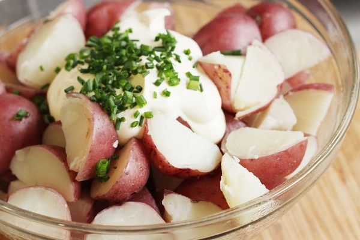

Sour Cream Potato Salad

Photo: Stacy Spensley (CC BY 2.0)
A layered potato salad of sliced cooked potatoes with onion and parsley, dressed in a sour cream and mayonnaise blend seasoned with horseradish and celery seed.
Directions
- Combine the first four ingredients. Set aside. Place half of potatoes in bowl, sprinkle with parsley and onion. Top with half of mayo mixture. Repeat with another layer. Cover and chill.
- Combine the first four ingredients: the mayonnaise, sour cream, horseradish, and celery seed. Set aside.
- Place half of the cooked, sliced potatoes in a bowl and sprinkle with the parsley and onion.
- Top with half of the mayonnaise mixture.
- Repeat with another layer of the remaining potatoes, parsley, onion, and mayonnaise mixture.
- Cover and chill.
Goes well with
https://lizotte.cool/recipe/sour-cream-potato-salad.html